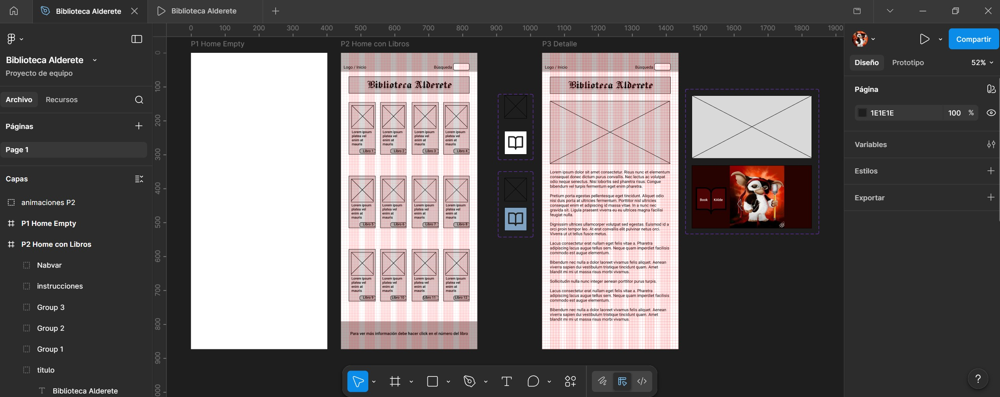

Alderete Sports
Arquitectura de la información para un e-commerce deportivo.
Ver proyectoPortafolio de proyectos del curso
Reúno aquí una selección de proyectos desarrollados durante mi formación en UX/UI, enfocados en prototipado, arquitectura de la información, sistemas visuales e interacción.
Ver proyectosMi formación en UX/UI complementó mi perfil de desarrolladora al enseñarme a pensar antes de construir, priorizando al usuario, la claridad de los flujos y una arquitectura de la información más sólida.
Estos proyectos representan distintas formas de trabajar UX/UI como complemento al desarrollo: desde la organización de contenidos y la arquitectura de la información, hasta prototipos interactivos, guías visuales y propuestas centradas en la experiencia de usuario.
Arquitectura de la información para un e-commerce deportivo.
Ver proyecto
Prototipo de baja fidelidad para web pública, noticias e intranet.
Ver proyecto
Prototipo interactivo en Figma con grillas, hover y cambios visuales.
Ver proyecto
Basado en Atomic Design, muestra el proceso de estructuración de los componentes.
Ver proyecto
Sitio web responsive desarrollado en HTML, CSS y Bootstrap, luego replicado en Figma en versión escritorio y móvil, manteniendo el mismo concepto visual.
Ver proyecto